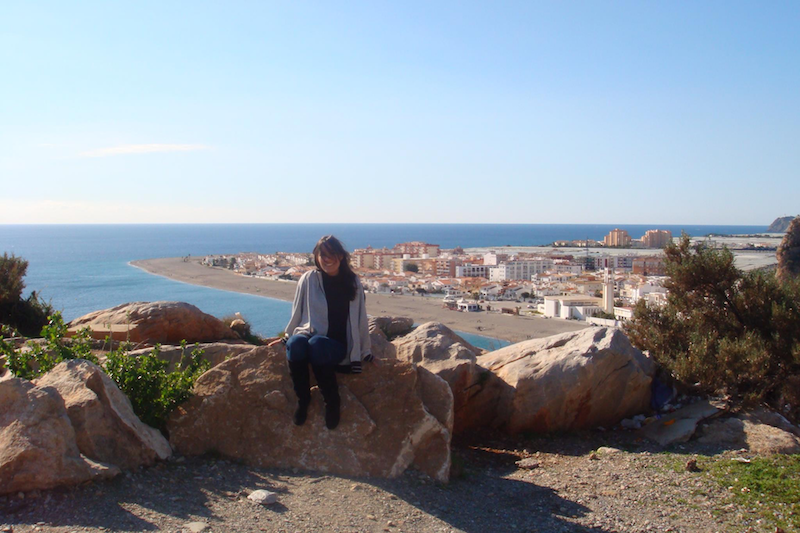

My name is Martha Thomae. I am a PhD candidate in Music Technology at McGill University. I enjoy singing, baking, and reading about art history. I especially love opera and baroque music, but also enjoy rock and jazz. From the most popular things people visualize when listening to their favorite music—see this bit of the great lecture by Susan Rogers on "Music Psychology for Record Makers"—I most likely tend to visualize myself performing, which is why I tend to listen to female vocalists.

For the past two years, I have been working on the digitization and OMR of a XVII c. music manuscript from my home country (Guatemala). This manuscript is written in mensural notation, a music notation system used in Europe during the Late Middle Ages and the Renaissance.
And my description would not be complete without including a photo of my cat (Ludmila, or Mila for short).